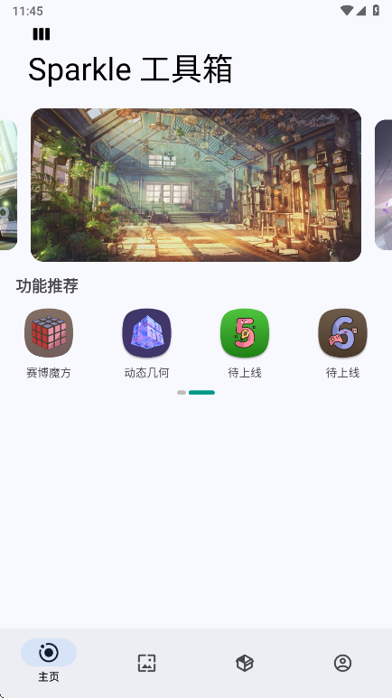

一个远程开发者的晨间手机工作流：用 Sparkle 串起密码、笔记、壁纸和摸鱼
作为远程工作者，每天开电脑前有一串手机上的事要处理。Sparkle 把密码箱、笔记、壁纸站和三个摸鱼小游戏装进同一个应用，让我少装了四个独立 App，一套流程十分钟内走完。
我每周要做的事里，有一串固定发生在手机上、开电脑之前：确认开发相关账号的密码有没有过期、记一下今天必须完成的三个任务、换一张新壁纸让桌面视觉焕然一新、以及——说实话——摸五分钟鱼让大脑从昨晚的梦境里完全醒过来。
以前这四件事我分别用四个独立的应用来完成。密码管理器是正经工具，界面冷得像银行柜台；笔记 App 是随手记的那种，经常写完就忘了存在哪；壁纸装了一个专门的 App，精选二次元图；摸鱼游戏单独下了 Chrome 恐龙的复刻版。四个图标占着四行主屏，每次切来切去手都酸。直到我发现 Sparkle官网——这个把密码箱、笔记、壁纸站和三个摸鱼小游戏打包在一起的应用，帮我把这四步压缩到十分钟内，在同一个应用里从头到尾走完。
旧流程哪里卡
先说一下我为什么会嫌旧流程麻烦。
密码管理那块，我之前用的应用功能很全，但每次打开都要先等它验证、再输主密码，然后还要在一堆分类里找"开发相关"那组，才能看到 GitHub、Gitee、GitCode 这几个常用账号的信息。确认完一个再确认下一个，来回退层。
笔记更随意了。临时记的东西我不会打开专门的笔记软件，而是在手机桌面下拉搜索框里直接敲。搜索框的好处是不用等 App 打开，坏处是写完之后这条内容既不会自动归档，也不会和任何标签关联，第二天想起来要找完全靠运气。
壁纸这事倒不复杂，就是每次挑图完了还要手动去手机设置里找壁纸选项、选"设为桌面和锁屏"，中间要点三四次确认，我曾经在着急开会时跳过了锁屏那一步，结果过了一周才发现锁屏还是旧图。
摸鱼游戏最尴尬——我在手机上装了 Chrome 恐龙，但它本身是个独立 App，放在主屏第一行看着太显眼。后来我把它塞进文件夹，但每次想点开还要先翻两层。
把这四步加起来，以前晨间准备要花十几分钟，而且中途跳来跳去容易走神。
新流程：Sparkle 插进了哪一环
安装包从官方下载拿的，Sparkle 不是我找了很久才发现的"完美应用"，而是偶然在市场上刷到的。它的定位听起来有点怪——"工具箱 + 摸鱼"——但实际用起来发现这个组合恰恰解决了我那四件事分散的问题。
它把密码箱、笔记、壁纸站、解压三件套四个模块整合在同一个外壳里，切换用底部标签栏就能完成。我现在的晨间流程是这样的：
第一步，开 Sparkle → 进密码箱。密码箱的界面是列表式的，每条是一个应用图标加账号名，不用先选分类再进子页面。我把开发相关的几个账号置顶了，打开第一眼就能看到 GitHub、Gitee、GitCode 那三行，逐个点进去确认一下有没有过期提示。设置新密码也快，输完保存就完事，没有额外的分类标签要求。
第二步，切到笔记模块。笔记模块没有复杂的分类系统，就是纯文本。我一般在晨间流程里只写三条：今天必须完成的事、一个可能的风险点、以及下班前要检查的东西。写完就关掉，不做归档。这个"不归档"反而让我没了整理的负担——临时记的东西本来就是用过即弃的，何必强行组织。
第三步，切到壁纸站挑一张新图。壁纸站的分类栏围绕热门二次元 IP 组织：大别野、星穹铁道、原神、崩坏3、绝区零、动漫。我是原神玩家，所以直接进原神分类扫瀑布流，看到合胃口的大图点开，弹出菜单里选"设为桌面和锁屏壁纸"，一次搞定两处。以前那个第三方壁纸 App 要跳转到系统设置才能完成这步，现在在应用内部就做完了。

第四步，摸五分钟鱼。解压三件套里我基本只玩谷歌恐龙训练营——它把 Chrome 浏览器那个著名的断网小恐龙搬了进来，规则没变：恐龙自动向前跑，你只负责跳过仙人掌。一局几十秒，节奏会随距离加快。赛博魔方和动态几何我偶尔也玩，但恐龙是常驻选项，因为上手最快，想停就停。
这四步加起来，顺利的话十分钟内搞定。而且全程不用离开同一个应用，不用切换网络权限，也不用在桌面文件夹里翻来翻去。
实操细节：最容易断链的两个环节
上面说的是理想流程，实际用下来发现有两个环节需要额外注意，否则会卡一下。
第一个是密码箱的旧密码清理。我之前把所有账号密码都堆在一个分类里，时间久了里面混了十几个已经不用的账号——旧邮箱、废弃的测试机账号、甚至还有一个三年前的游戏账号。每次打开列表都会被这些没用的条目占满视线。Sparkle 密码箱有个清理旧密码的功能——这个我是在Sparkle文档里确认过的——可以按"最后使用时间"筛选出超过半年没打开过的条目，我把它设置在每月一号自动触发，每次清理能删掉七八个条目，列表清爽不少。
第二个是壁纸尺寸与裁切。我是带鱼屏手机，超宽比例的壁纸有时候上屏后上下会被裁掉。Sparkle 的壁纸详情页会标注原图分辨率，我现在养成习惯——挑图时先看一眼分辨率，如果是特别宽的图（比如 3516 × 1440 这种比例），就先"保存原图"，去相册手动裁成合适的比例再设壁纸，而不是直接在应用里一键设置。这一步以前我也会跳过，结果设完发现角色的脑袋被切掉了一半，又要重选。
恐龙训练营也有个小技巧值得说一下——别盯着仙人掌本身跳，视线放在恐龙前方一点的位置更容易预判。跳早了撞在仙人掌头上的概率远大于晚跳，所以宁可慢半拍也别冒进。连续两株挨得近的仙人掌是高频死亡点，第一跳落地立刻准备第二跳就行，不用贪跳跃高度。
效果与边界
省了多少事？以前四件事用四个应用，现在一个搞定，手机桌面少了四个图标。密码确认从逐层点击变成列表直接看；临时笔记有了固定入口；壁纸设置不用跳转系统；摸鱼游戏放在同一个 App 里不扎眼。这些"少了两次手动复制"、"少切一次应用"、"不用等密码管理器验证"的小节省，每次加起来可能也就一两分钟，但一周下来能多出十几分钟的闲工夫。
这套流程也有边界。Sparkle 的密码箱不做跨设备同步——我试过在两台手机间找同一组数据，发现只能手动导出再导入。所以它适合我这种"单主力机 + 一台备用机"的场景，但如果你的密码管理需要跨三四个设备实时同步，可能还是得用专业密码管理器。壁纸站的内容全部围绕二次元 IP，非二次元用户在这里找不到合适的图，这点没什么好说的，应用的定位就是这样。
解压三件套本身都是离线玩具，没有进度系统也没有排行榜，玩腻了就停，不会让你陷入"再来一局"的循环——这对我反而是好事，因为我本来就不想让摸鱼变成新的时间黑洞。
总的来说，这套"晨间手机四步走"我现在已经坚持了一个多月。它不是什么值得炫耀的生产力革命，就是把本来分散的四件事装进了同一个壳里，用底部标签栏串起来。有些工作流工具追求极致的自动化——比如用 IFTTT 把手机的某个动作自动触发另一个动作——但我试过几次之后发现，对我这种每天只有十分钟晨间整理需求的人来说，"手动但集中"反而比"全自动但分散"更顺手。
毕竟，十分钟能搞定的事，不值得花半小时配置自动化。顺手说一句，Sparkle 的相关资料我同步放在了 GitHub、Gitee 和 GitCode 三个仓库，按自己的访问习惯选就行。